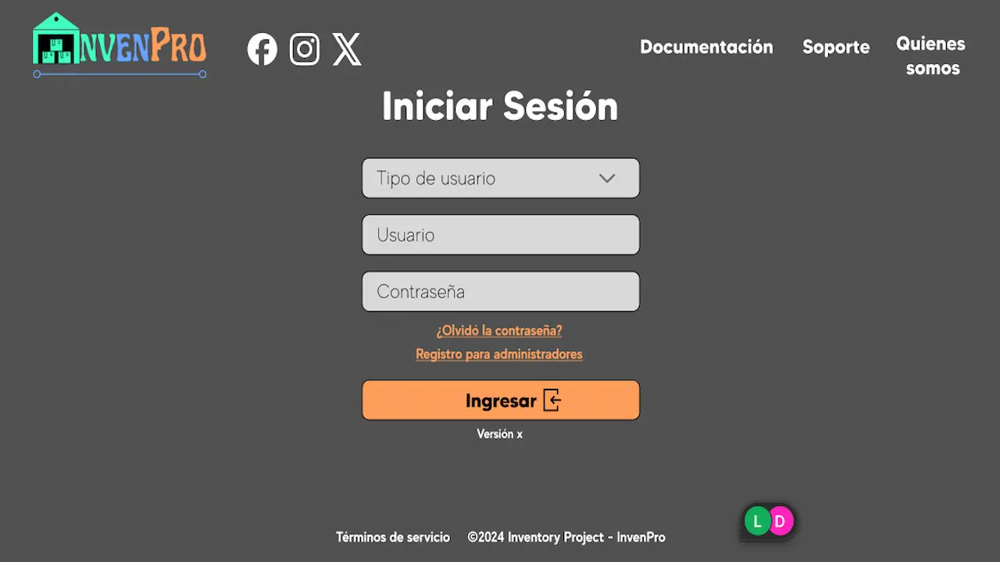

Bienvenid@ a mi portafolio. Me gusta enfrentar problemas, entender qué hay detrás de ellos y encontrar la mejor manera de resolverlos. No me define una tecnología en particular, sino la manera en que puedo emplearlas para convertir ideas y necesidades en realidades funcionales.
Descargar CVSoy David, un analista y desarrollador de software, colombiano recién graduado del tecnólogo Análisis y Desarrollo de Software del SENA. Me gusta construir sistemas donde el usuario encuentre tanto orden como claridad, y donde por debajo haya un desarrollo seguro y escalable. Aprendo con proyectos propios y cursos, ya llevo un año programando.
En mis prácticas en la Secretaría de Educación de Yumbo monté y configuré GLPI desde cero como mesa de ayuda y gestión de equipos para las instituciones educativas del municipio, además de esto, desarrollé un plugin propio para ese entorno GLPI. Partí sin conocimiento previo y lo saqué adelante solo; esa es mi forma de ser ya que cuando me comprometo, lo termino. Busco mi primer empleo como desarrollador, aunque estoy abierto a proyectos freelance o colaboración en proyectos.

Descripción breve de dos o tres líneas.
Descripción breve de dos o tres líneas.
Descripción breve de dos o tres líneas.
Descripción breve de dos o tres líneas.